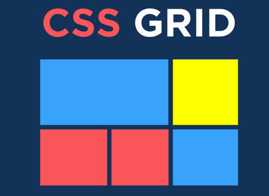

CSS Grid
Es un diseño bidimensional que puede usar para crear elementos receptivos en la web. Los elementos de la cuadrícula se organizan en columnas y puede colocar filas fácilmente sin tener que jugar con el código HTML. ¿Alguna vez ha tenido problemas para colocar elementos en su navegador web? Quizás cada vez que intentas pensar en una solución, te cansas y te rindes. Si es así, permanezca atento a medida que revele un nuevo método para resolver este tipo de problemas con un estrés mínimo o nulo. Bienvenidos todos. En este tutorial, veremos cómo usar el diseño de cuadrícula CSS. Primero, aprenderemos qué es CSS Grid y qué debe hacer. Luego repasaremos las características de CSS grid, las razones por las que debemos estudiarlo y los beneficios que aporta a nuestros proyectos. Finalmente, discutiremos cuándo es mejor usarlo. ¿Qué es CSS Grid? Entonces, ¿qué es CSS Grid? CSS Grid es un diseño bidimensional que puede usar para crear elementos receptivos en la web. Los elementos de la cuadrícula se organizan en columnas y puede colocar filas fácilmente sin tener que jugar con el código HTML. Aquí hay una definición concisa del diseño de cuadrícula CSS: CSS Grid es una poderosa herramienta que permite crear diseños bidimensionales para columnas y filas en la web. ( Fuente ) Características del diseño de cuadrícula CSS Tamaños de pista flexibles Puede utilizar la frunidad (Unidad de fracción) para asignar cualquier valor de píxel especificado a la cuadrícula. Esto hará que su cuadrícula sea organizada y receptiva. Ubicación del artículo La cuadrícula CSS ha facilitado mucho la colocación de elementos en el contenedor en cualquier área que desee sin tener que meterse con el marcado HTML. Controles de alineación La alineación de un elemento/elemento en un contenedor es más fácil que nunca con CSS Grid. En el contenedor, ahora puede organizar elementos/elementos horizontal y verticalmente como desee. Beneficios de CSS Grid CSS Grid es muy flexible y receptivo. Facilita la creación de diseños bidimensionales. CSS Grid también es fácil de usar y es compatible con la mayoría de los navegadores web. La cuadrícula CSS hace que su marcado sea más limpio (en su código HTML) y le brinda mucha más flexibilidad. Esto se debe en parte a que no es necesario cambiar el marcado (código HTML) para cambiar la posición de un elemento mediante la cuadrícula CSS. Con todo, CSS Grid Layout nos ayuda a crear diseños más complejos usando columnas y filas. ¿Cuándo debería usar CSS Grid? Aunque puedes usar CSS Grid en prácticamente cualquier aspecto del desarrollo web, hay ciertas situaciones en las que es ideal. Por ejemplo, cuando tenemos que implementar un diseño de diseño complejo, CSS Grid es mejor que la propiedad flotante de CSS. Esto se debe a que Grid es un diseño bidimensional (con columnas y filas), mientras que la propiedad flotante de CSS es un diseño unidimensional (con columnas o filas). Grid también es una buena opción cuando necesitamos un espacio o espacio entre elementos. Al usar la propiedad de cuadrícula CSS gap, el espaciado de dos elementos es mucho más fácil que usar CSS marginy paddingpropiedades que podrían terminar complicando las cosas. Propiedades de cuadrícula CSS El diseño de cuadrícula CSS consta de muchas propiedades de cuadrícula. Ahora vamos a echar un vistazo a algunos de ellos para que podamos aprender a usarlos. Propiedad de contenedor de cuadrícula Esta es una propiedad de cuadrícula CSS que alberga los elementos/elementos de la cuadrícula. Implementamos la propiedad del contenedor de cuadrícula CSS configurando el contenedor en una displaypropiedad de grido in-line grid.